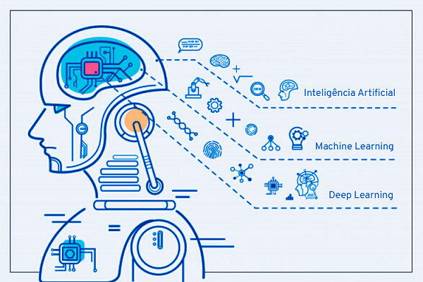

De uma maneira geral, Machine Learning é um campo da inteligência artificial que visa explorar estudos e
construções de algoritmos que possibilitam compreender de maneira autônoma. É possível ser capaz com o ML de
reconhecer e extrair padrões de um grande volume de dados, construindo dessa maneira um modelo de aprendizado.
Esse aprendizado é baseado na observação de dados como: exemplos, experiência direta ou instrução. Uma vez que
tenham aprendido, são capazes de executar tarefas complexas e dinâmicas, prever com mais precisão, reagir em
situações diversas e comportar-se de forma inteligente.
Podemos definir ML, portanto como uma espécie de campo de estudo que possibilita aos computadores a habilidade
aprenderem sem serem obrigatoriamente programados. Ou seja, é uma forma de fazer melhor no futuro com base em
experiências do passado.

Como o aprendizado de máquinas interfere nos dias de hoje?
Talvez você já tenha se perguntado, mas nunca foi a fundo na resposta de como um varejista online apresenta
ofertas quase que instantâneas para outros produtos que podem lhe interessar. Ou até mesmo já reparou como os
credores podem fornecer respostas quase em tempo real aos seus pedidos de empréstimo?
Muitas de nossas atividades diárias mais simples são alimentadas por algoritmos de machine learning que podem
incluir:
Detecção de fraudes.
Resultados de pesquisa na Web.
Anúncios em tempo real, tanto em páginas da web como em dispositivos móveis.
Análise de sentimento baseada em texto.
Pontuação de crédito e melhores ofertas.
Previsão de falhas em equipamento.
Novos modelos de precificação.
Detecção de invasão em uma determinada rede.
Reconhecimento de determinados padrões e imagens.
Filtragem de spams em e-mail.
Quais os métodos mais populares?
Existem dois métodos de aprendizados muito utilizados. São eles:
Aprendizado supervisionado: que consiste em exemplos rotulados. O algoritmo de aprendizagem recebe um
conjunto de entradas junto com as saídas corretas correspondentes, e o algoritmo aprende comparando a saída
real com as saídas corretas para encontrar erros. Em seguida, ele modifica o modelo de acordo.
Aprendizado não supervisionado: basicamente é usado contra dados que não possuem rótulos históricos. Ou
seja, o sistema não sabe a “resposta certa” nesse caso. O algoritmo deve descobrir o que está sendo mostrado
e o objetivo é explorar os dados e assim encontrar alguma estrutura neles. O aprendizado não supervisionado
funciona bem em dados transacionais.
Aprendizado semisupervisionado: geralmente é usado para as mesmas aplicações que o aprendizado
supervisionado, porém ele pode usar tanto dados rotulados quanto não marcados para o treinamento –
normalmente uma pequena quantidade de dados rotulados com uma grande quantidade de dados não rotulados (pois
os dados não rotulados são mais baratos e necessitam de menos esforço para serem adquiridos). Esse tipo de
aprendizagem pode ser usado com métodos como a classificação, regressão e previsão. O aprendizado
semisupervisionado é mujito útil quando o custo associado à rotulagem é muito alto para permitir um processo
de treinamento totalmente rotulado. Os primeiros exemplos disso incluem a identificação do rosto de uma
pessoa em uma webcam.
Aprendizado por reforço: essa opção é muitas vezes usado para a robótica, jogos e navegação. Com o
aprendizado por reforço, o algoritmo descobre por meio de tentativa e erro quais ações geram as melhores
recompensas.